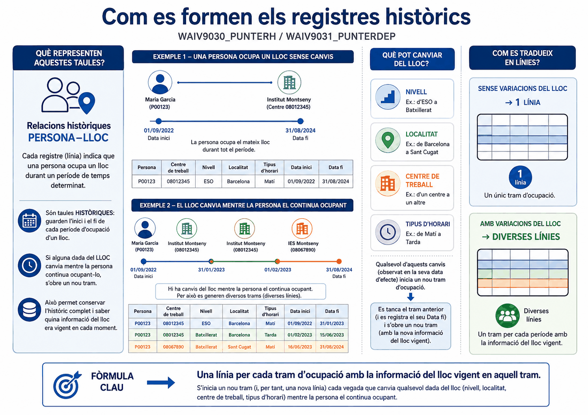
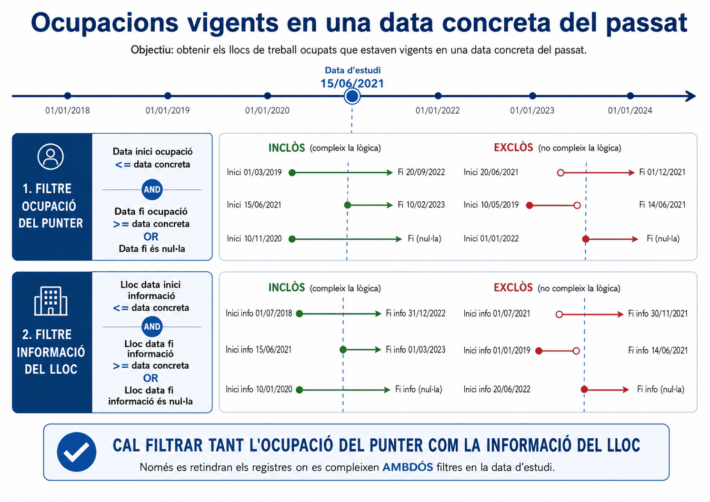

Apartat 1Les dues taules
Serveixen per extreure la informació històrica de totes les relacions entre persones i llocs. Tenen exactament la mateixa estructura i donen resultats diferents, igual que la parella de la unitat anterior.
| Taula | Conté | Per estudiar |
|---|---|---|
| WAIV9030 PUNTERH |
Tots els punters dels llocs del vostre àmbit, vigents i històrics. | L'evolució històrica dels vostres llocs: qui els ha ocupat. |
| WAIV9031 PUNTERDEP |
Tots els punters de les persones del vostre àmbit, actives i inactives. | La trajectòria de la vostra gent, encara que hagi passat per altres departaments. |
Acabada en 0, segueix el lloc. Acabada en 1, segueix la persona. Val per a 9060 i 9061, i val per a 9030 i 9031.
Apartat 2Recordeu què és un punter
Un punter és la relació entre una persona i un lloc durant un període: qui ocupava què, des de quan i fins quan. No és la persona ni el lloc: és el vincle entre tots dos.
Per això aquesta taula es diu així: conté tots els punters, també els tancats. És l'única taula del curs que guarda el passat de la relació persona-lloc. La taula de llocs, com vam veure a la unitat 8, no té memòria.
Hi trobareu:
- la ubicació actual de la persona i la històrica;
- dades personals;
- la relació contractual i la situació administrativa durant l'ocupació;
- dades del punter: com ocupava el lloc i entre quines dates;
- dades del lloc de treball durant aquell període.
Apartat 3Per què es multipliquen les línies
Aquesta és la particularitat que fa difícil la taula, i cal entendre-la abans de construir cap consulta.
Si la informació d'un lloc varia mentre una persona l'ocupa, es creen tantes línies com variacions hagi tingut aquell lloc. Un canvi de nivell, de localitat, de centre de treball o de tipus d'horari: sigui quin sigui el canvi, genera una línia nova.
Si el lloc no ha canviat durant l'ocupació, només hi ha una línia.
El que veieu
El que hi ha
Una sola ocupació, partida en tres trams perquè el lloc va canviar dues vegades mentre la mateixa persona l'ocupava.
Comptar aquestes files i dir que hi ha hagut tres ocupants és fals.

Apartat 4La data concreta del passat
La pregunta típica: quins llocs del meu àmbit estaven ocupats el 15 de març de 2023, i com eren?
La lògica és la mateixa del solapament de la unitat 13, però amb un període d'un sol dia. Situeu-vos a la línia del temps: la data d'estudi és un punt, i voleu els trams que el travessen.
- la data d'inici ha de ser anterior o igual a la data d'estudi;
- la data de fi ha de ser posterior o igual a la data d'estudi;
- o bé la data de fi ha de ser nul·la, perquè encara dura.

Apartat 5Primera lògica: l'ocupació
Es construeix exactament igual que a la unitat 13, sobre les dates del punter:
-
Criteri sobre la data d'inici
Operador
<=i la data d'estudi. -
Criteri sobre la data de fi
Operador
>=i la mateixa data. -
Dupliqueu amb Nou i poseu-hi És nul
Situeu-vos sobre el criteri de la data de fi, premeu Nou, i a la línia nova poseu És nul.
-
Combineu i canvieu a or
Ctrl per seleccionar les dues línies de data de fi, Combina, i el connector interior a or.
La consulta ja tornaria qui ocupava cada lloc aquell dia. Però tornaria també totes les versions d'aquells llocs, perquè no heu dit res sobre les dates de la informació del lloc. Sortirien files repetides per a la mateixa persona i el mateix lloc.
Apartat 6Segona lògica: el lloc
Aquí està el gir de la unitat. Com que el que analitzeu és la situació en una data concreta, també voleu que la informació del lloc sigui la d'aquella data i no la de cap altre tram.
Apliqueu exactament la mateixa lògica als camps de data d'inici i data de fi de la informació del lloc:
Quatre criteris i dos parèntesis. Cada parèntesi combina les dues condicions d'un mateix camp de data de fi, i els dos blocs s'uneixen amb AND.
Exactament qui ocupava cada lloc del vostre àmbit aquell dia i amb quines característiques tenia el lloc en aquell moment. Una fila per lloc ocupat, sense duplicats.
Apartat 7Rotació i històric
L'altre gran ús d'aquesta taula no és mirar un dia concret, sinó mirar tot el període: quants ocupants diferents ha tingut cada lloc.
Llocs amb alta rotació
- Per a què serveix
- Detectar llocs que han tingut diversos ocupants, senyal que costa de cobrir o de retenir.
- Taula
- WAIV9030_PUNTERH
- Camps
LLOC_CODIiPERS_NIF- Agregat
- Clic dret sobre el NIF → Distinct Agregats → Compte
- Criteri
- Sobre el recompte,
>= 3 - Idea clau
- Cal Distinct: sense ell comptaríeu línies, i ja sabeu que una sola ocupació en pot generar diverses.
24 llocs amb alta rotació
És la conseqüència directa de l'apartat 3. Si compteu NIF amb un Agregats normal, un lloc ocupat per una sola persona durant sis anys, amb tres canvis de nivell, us surt amb un recompte de 3 i entra a la llista de "alta rotació". El resultat és fals i sembla perfectament raonable.
Apartat 8Errors freqüents
El que passa
Em surt la mateixa persona i el mateix lloc diverses vegades.
La rotació surt disparada.
Zero registres.
Falten les ocupacions que encara duren.
Busco la trajectòria d'un company i no hi surt sencera.
El que passa de veritat
Només heu aplicat la primera lògica. Us falten els criteris sobre les dates de la informació del lloc.
Compteu línies en comptes de persones distintes. Us cal Distinct Agregats.
Algun parèntesi té un AND a dins on hi hauria d'haver un or.
Us falta la condició És nul a alguna de les dues dates de fi.
Esteu a WAIV9030, que segueix els vostres llocs. Per seguir persones, WAIV9031.
Apartat 9Exercicis
Una foto del passat
ReprodueixSobre WAIV9030, obteniu els llocs del vostre àmbit que estaven ocupats en una data concreta del passat, amb les característiques que tenia el lloc aquell dia.
Munteu les dues lògiques de dates completes.
Pista
Quatre criteris i dos parèntesis. Cada parèntesi tanca les dues condicions d'un mateix camp de data de fi. Feu servir Nou dues vegades i Combina dues vegades.
Comprovació
Seleccioneu LLOC_CODI i PERS_NIF i mireu la
graella: cap combinació de lloc i persona s'ha de repetir.
Si se'n repeteix alguna, us falta la segona lògica.
Comproveu també al panell Camps que hi ha dos parèntesis i que cadascun conté un or.
Treu la segona lògica
TrencaSuprimiu els dos criteris sobre les dates de la informació del lloc i torneu a executar.
- Quants registres surten ara?
- Busqueu un lloc que aparegui més d'una vegada. Què hi canvia entre les seves files?
Què hauria d'haver passat
1. Surten més files, i totes són certes: cadascuna és una versió del lloc durant aquella ocupació.
2. El NIF i les dates del punter són idèntics; el que canvia és alguna característica del lloc, com el nivell o la localitat, i les dates de la informació del lloc.
Aquest és l'error que produeix informes amb la plantilla inflada. No falla res: simplement heu demanat totes les versions en comptes de la d'aquell dia.
Els llocs que no paren
ResolPer a un informe de provisió us demanen els llocs del vostre àmbit que han tingut tres o més ocupants diferents, i quants n'ha tingut cadascun.
Solució
24 llocs
Distinct és obligatori, i és tota la gràcia de l'exercici. Amb un agregat normal comptaríeu línies, i un lloc amb un únic ocupant de fa sis anys que hagi canviat tres vegades de nivell us sortiria com a lloc d'alta rotació.
No cal cap lògica de dates aquí: no mireu un moment concret, mireu tot l'històric. Les dates només calen quan pregunteu per una data.
Apartat 10Llista de comprovació
- Triar entre
WAIV9030iWAIV9031segons l'encàrrec. - Explicar què és un punter sense mirar la unitat 7.
- Explicar per què una ocupació pot ocupar diverses línies.
- Enunciar la lògica de dates per a una data concreta.
- Construir la lògica de l'ocupació amb Nou i Combina.
- Saber per què cal aplicar-la una segona vegada sobre les dates del lloc.
- Comprovar el resultat verificant que cap parella de lloc i persona es repeteix.
- Muntar la consulta de rotació amb Distinct Agregats.
- Explicar per què sense Distinct la rotació surt inflada.
- Saber quan cal lògica de dates i quan no.
Amb aquesta unitat teniu totes les taules del curs i totes les tècniques de consulta. La part IV tracta de què fer després: treure les dades del programa, fer que les consultes preguntin, i el repàs dels errors que fan perdre més temps.